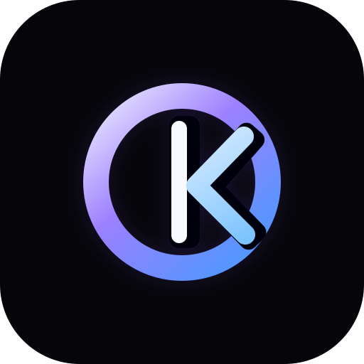
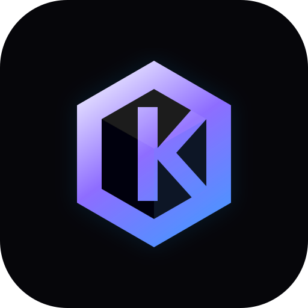
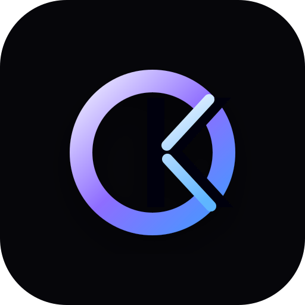

A. Kinetic Monogram
O caminho mais equilibrado: mantém o OK, mas com recorte interno mais intencional e aparência de marca de software.
Recomendado
OrkestOS
Nova rodada menos amadora: formas mais proprietárias, menos literalidade, melhor peso visual e leitura mais premium. Todas continuam partindo do conceito O + K.

O caminho mais equilibrado: mantém o OK, mas com recorte interno mais intencional e aparência de marca de software.

Mais premium e institucional. A forma hexagonal sugere sistema, estrutura e orquestração, com um K mais integrado.

Mais minimalista. O K aparece como corte/sinal, deixando o símbolo menos literal e com melhor leitura como ícone.